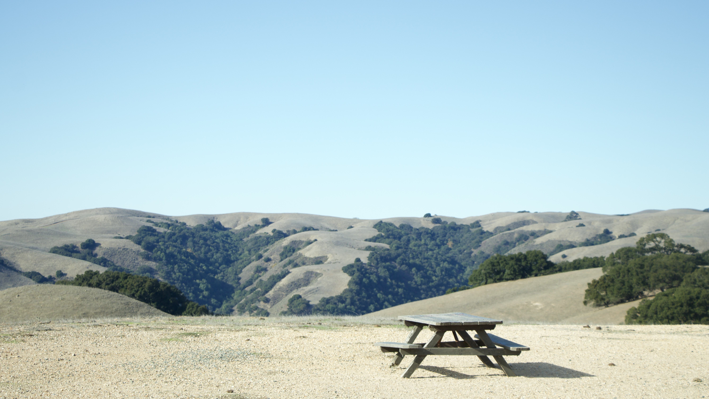
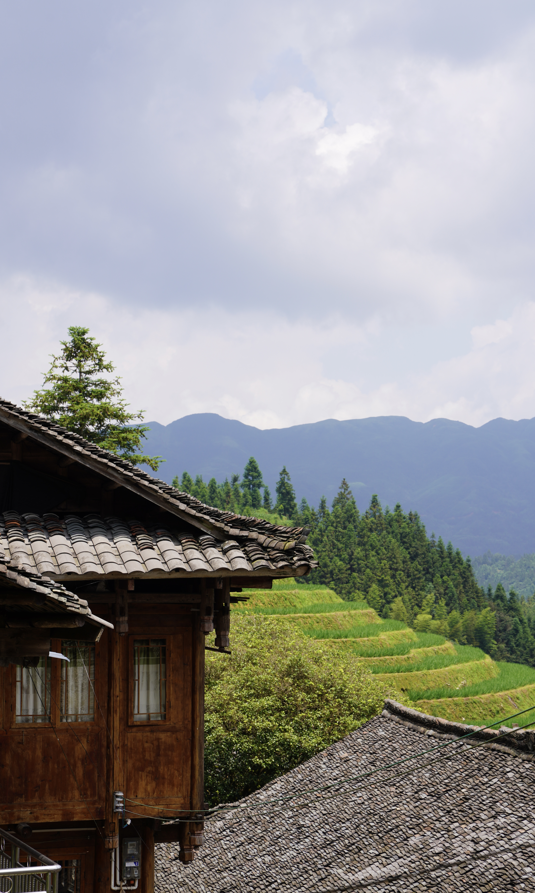
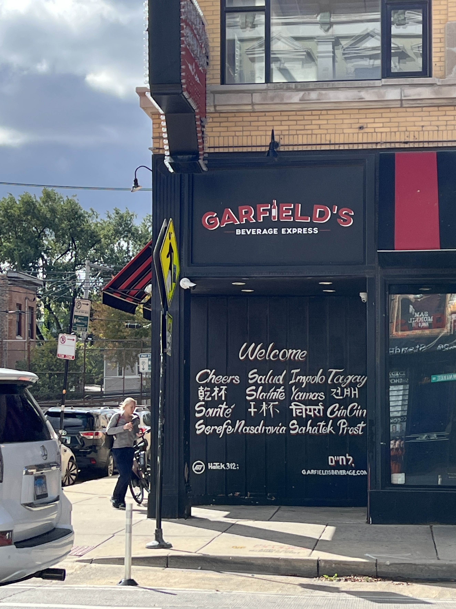
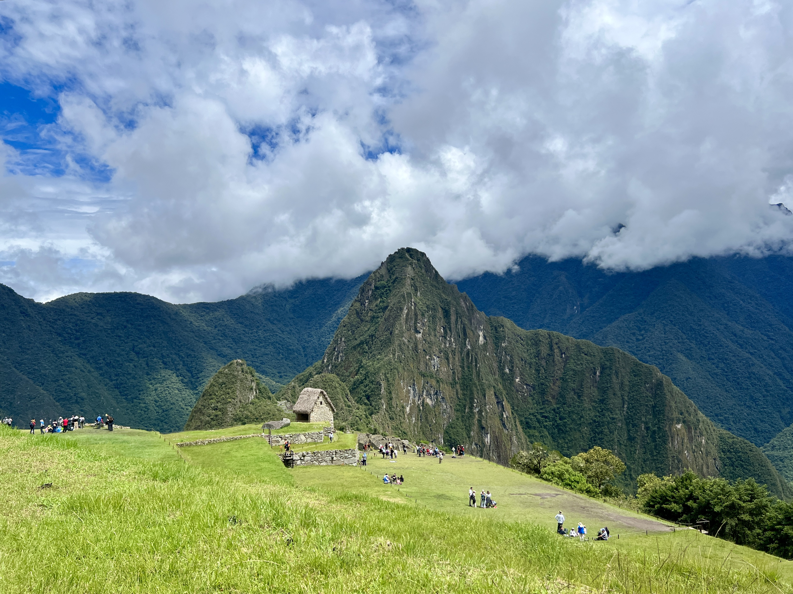

✦ Photography and Writing
Both make me slow down and notice what I would otherwise pass by. Photography helps me see composition; writing helps me see what I think.

These change as I learn, build, and meet people who shift my perspective.
✦
As of July 2026.
I’m interested in the distance between a technical breakthrough and a product people choose to use. The most compelling work makes complicated systems feel simple without hiding the decisions underneath.
That requires engineering, but also taste, user research, communication, and judgment about what not to build.
I keep returning to businesses that align what they sell with what their customers actually need. When incentives are clear, product choices and operating models begin to look different.
As execution becomes easier to automate, choosing the right problem—and recognizing when the context has changed—becomes more valuable.
Great products and businesses are built through relationships. I pay attention to the places where people gather, how trust compounds, and how technology can support real-world connection instead of replacing it.
Both make me slow down and notice what I would otherwise pass by. Photography helps me see composition; writing helps me see what I think.

I’m drawn to how communities carry memory through art, festivals, and ritual. In an art history course, I studied Kyoto’s Gion Festival across folding screens and contemporary anime. Read my research paper.

I study languages as a way to understand culture. I speak English, Mandarin, and Cantonese, and I’m learning Spanish.

Road trips, wakesurfing, skiing, and hiking remind me that the best way to understand a place is to move through it.
My favorite destination so far is Peru, where I visited Machu Picchu and the Amazon rainforest. Standing among the grand Inca ruins—and meeting people along the way—left me humbled.
